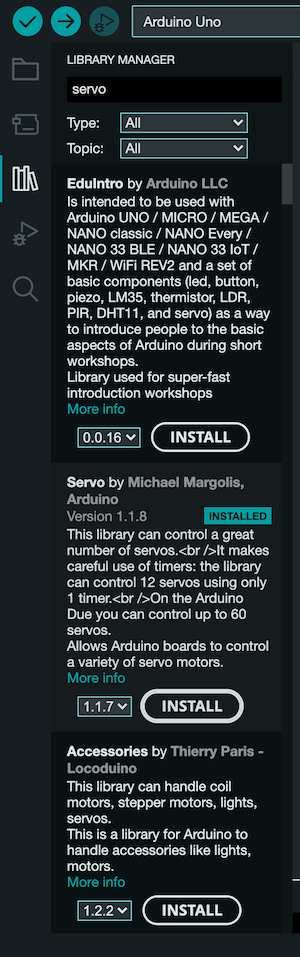
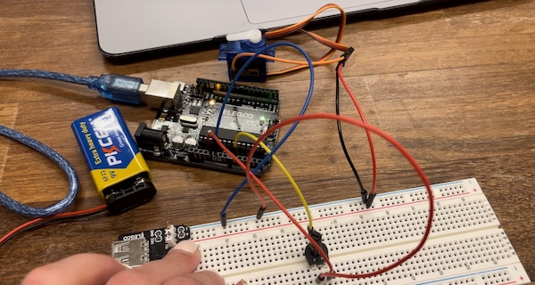
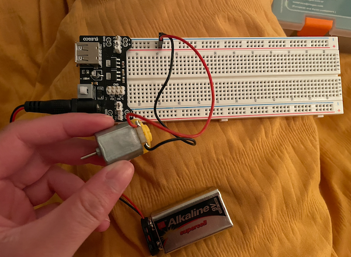
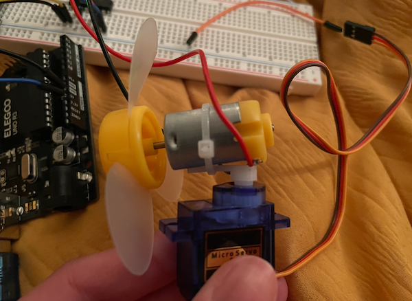
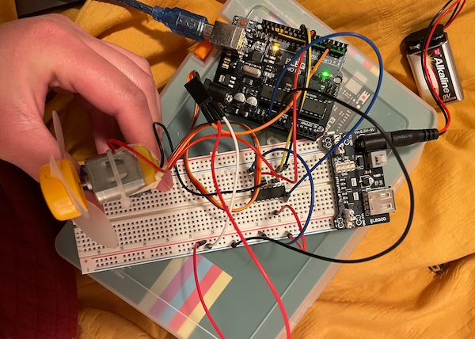

This lab was completed on March 15, 2023.
Overview
Materials
The materials used for this lab were:
↠ Arduino (Elegoo) Uno R3 Controller Board
↠ USB Cable
↠ USB Adapter (if you have a USB-C-only laptop)
↠ Breadboard Jumper Wire
↠ Resistors
↠ Power Supply Module
↠ Servo Motor SG90
↠ DC Motor and Fan Blade
↠ L293D IC
↠ Button
↠ Potentiometer
↠ 9V Battery with Snap-on Connector
↠ Multimeter
Part 0: Setting up Power
Before I began using any motors, I needed to set up a power source for them. Motors are too powerful to power using only an Arduino, so this requires the usage of a 9V battery. Trying to power motors from the Arduino can burn out the Arduino pins, and sometimes even the USB port on the computer.
I used a power supply module to attach to my breadboard to introduce my 9V battery into my circuit. The ground of the motor power and the ground of the Arduino are connected to each other, but the 5V from the Arduino should not be connected to the 5V from the power supply module on the breadboard.
Part 1: Wiring the Servo
In the first part of the lab, I connected the servo motor. A servo motor is a type of DC motor that allows control over precise angles. We can use it to rotate 0 to 180º around. I did this by sending a PWM signal to the servo, which consists of three wire connections, power (red), ground (brown), and signal (orange/yellow). After I set up the motor power using the power supply module, I connected the power and ground to the 5V rails. The signal line of the servo connected to a PWM pin on the Arduino.
In order to program the servo, I installed the servo.h library, which can be seen below.
In order to start my first program with the servo, I wanted to create a sweeping motion. To do this, I used a code that included the servo.h libarary such as servoA.write() and servoA.attach(). Below you can view my code and sweeping servo.
Part 2: Controlling the Servo
In the second part of the lab, I controlled the movement of the servo motor using a potentiometer. I moved the servo in sync with the potentiometer, so that when I moved the potentiometer all the way to one side, the servo moves to one side (0º or 180º). The Arduino function that I used to convert the analog potentiometer reading into an angle value that can be sent to the servo was map(). Below is my code and video of this working.
Next, I wanted to use the potentiometer to control the speed of the sweeping servo motor. I took the code that was given, and then mapped the values of the potentiometer to change the delay and speed of the servo. Below, you can see the servo with different changes from 5 to 50 milliseconds.
Part 3: DC Motor and Motor Driver
In order to have the servo keep rotating beyond 180º, we need a DC motor. In ordder to run the DC fan motor, I needed to connect the two terminals to power (5V) and ground. I used the power supply module to supply power to the motor.
To rotate the motor in the opposite direction, you have to change the current in the motor. If I were to disconnect the two motor connections from the nreadboard, and put them back in the opposite way, I would see that the motor starts running in the opposite direction.
I used a motor driver, which provides the motors with their own power source, while still allowing control from the Arduino. The motor driver that I used is the L293D driver, which have control pins which can instantly turn the motor off and on.
Part 4: Table-Top Fan
For the last part of the lab, I constructed a toy fan and wrote code to operate it like an automated table fan. I started by taking the DC motor and attaching it to the shaft of the servo so that rotating teh servo would cause the motor to move as well.
 I wrote a program so that the servo slowly rotates (and hence the body of the DC motor attached to it) from 0° to 120°, and then back to 0°. This movement should be slow, with at least 20ms between each angle step, and should keep repeating inside loop(). Additionally, while the servo is moving back and forth, spin the motor fan continuously at 70% speed. The PWM value appropriate for this speed is 179 out of 255 total power.
**** video
Extra Volt
Conclusion and Reflection
In conclusion, I thought that this was a fun lab, and it was really exciting to see things move! I enjoy being able to really see what I am learning become tangible, and I am excited to learn more that builds off of the foundation that this lab provided me with.